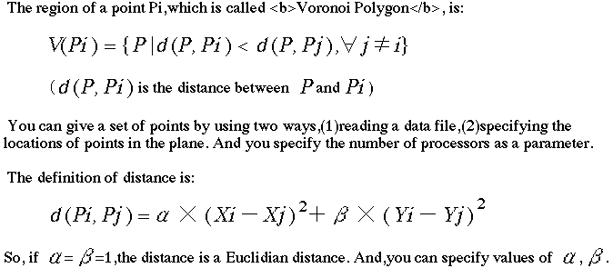

Machine: Multi-PSI Environment: PIMOS Language: GDCC Source Code: 260 KB Documents: Manual (Japanese)
The algorithm of this program is O(N)(N is the number of given points) in calculation time, that is the same order as the most effective algorithm which is well known.
And this algorithm is high degree of parallelism, so parallel speedup is obtained using any processors.
This program constructs a Voronoi Diagram of a finite set S of given points in the plane.
It is written in GDCC, parallel constraint logic programming language, and you can execute this program on Multi-PSI.
